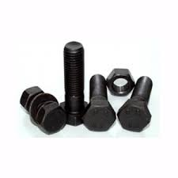

Công ty trách nhiệm hữu hạn trung việt phát
Chuyên gia công xi mạ kim loại

Nhuộm đen bulong, ốc vít là phương pháp sử dụng những sản phẩm hóa học để oxy hóa bề mặt bulong, ốc vít tạo màng phủ chuyển đổi trên bề mặt kim loại nhằm bảo vệ bulong, ốc vít tránh các tác nhân xấu từ môi trường bên ngoài lên bề mặt bulong, ốc vít như nhiệt độ, độ ẩm,… Lớp phủ này có khả năng chống ăn mòn bulong, không làm hư hại, ăn mòn hay biến tính bề mặt bulong nên rất được ưu chuộng và sử dụng rộng rãi.
Nhuộm đen bulong, ốc vít là phương pháp sử dụng những sản phẩm hóa học để oxy hóa bề mặt bulong, ốc vít tạo màng phủ chuyển đổi trên bề mặt kim loại nhằm bảo vệ bulong, ốc vít tránh các tác nhân xấu từ môi trường bên ngoài lên bề mặt bulong, ốc vít như nhiệt độ, độ ẩm,… Lớp phủ này có khả năng chống ăn mòn bulong, không làm hư hại, ăn mòn hay biến tính bề mặt bulong nên rất được ưu chuộng và sử dụng rộng rãi.
Phương pháp nhuộm đen bulong, ốc vít có tác dụng lớp sắt thép bên trong tránh xác tác nhân xấu ở môi trường bên ngoài làm oxy hóa, gỉ sét, biến dạng bề mặt của bulong khi nhiệt độ cao, độ ẩm lớn,… Lớp oxit đen ngoài chức năng kể trên còn đem lại tính thẩm mỹ cao nên khá được ưa chuộng. Các sản phẩm ốc vít thường được xử lý bề mặt nhuộm đen hầu hết là loại có cấp bề cao như: bulong S10T, bu lông neo,…
Hiện nay bu lông và ốc vít được sử dụng rất nhiều trong mọi lĩnh vực trong cuộc sống khi lắp ráp, cơ khí, chế tạo, thiết bị công nghiệp, nhà xưởng công nghiệp, công trình dân dụng, công trình giao thông…
Việc sử dụng bu lông và ốc vít hết sức đơn giản và không đòi hỏi các công nghệ phức tạp chính vì thế mà ai cũng có thể sử dụng được.
Nhuộm đen bulong, ốc vít có khả năng chống oxy hóa. và chống chịu ô môi trường có điều kiện thời tiết không thuận lợi. Đặc biệt lớp mạ kẽm 7 màu phủ trên bề mặt mang đến vẻ ngoài bắt mắt hơn thích hợp cho việc trang trí.